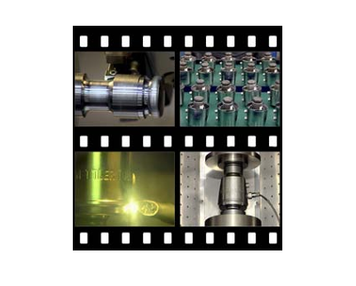
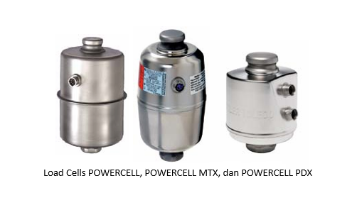
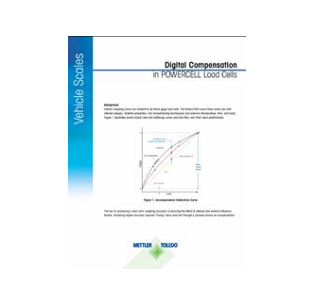

POWERCELL® Load Cells
Kelebihan :
• Tingkat kegagalan sangat rendah
• Banyak fitur inovatif
Kelemahan :
• Biaya awal lebih tinggi
• Protokol hak milik
Load Cells POWERCELL dapat dibedakan dari jenis Load Cells lainnya karena Load Cells tersebut dapat digambarkan sebagai perangkat aktif, bukan perangkat pasif. Seperti Load Cells digital, sel beban POWERCELL menggunakan pengukur regangan dan konversi digital, tetapi setiap sel dapat menyempurnakan informasi berat sebelum sinyal akhir meninggalkan sel. Load Cells tersebut juga dapat mengirimkan informasi tambahan selain pembacaan berat, yang memungkinkan sistem memantau kesehatannya sendiri.
Pada sebagian besar timbangan truk, terminal adalah satu-satunya komponen yang memiliki kemampuan pemrosesan data. Namun, pembacaan pada terminal hanya sebaik sinyal yang diterimanya dari sel beban. Sistem Load Cells POWERCELL mengandalkan kemampuan pemrosesan Load Cells dan terminal, yang menyediakan kemampuan yang melampaui kemampuan sistem timbangan tradisional. Kemampuan tersebut meliputi:
• Kompensasi digital
Algoritma kompensasi hak milik dibangun ke dalam mikroprosesor di setiap Load Cells. Setiap sel diprogram secara individual selama pembuatan berdasarkan karakteristik masing-masing. Setelah sel digunakan, setiap sel terus mengukur variabel, seperti suhu, riwayat pemuatan, dan waktu pemuatan. Algoritma bawaan kemudian menetralkan efek faktor-faktor tersebut pada pembacaan berat. Hasilnya adalah pengukuran berat yang sangat konsisten dan akurat, terlepas dari kondisi lingkungan yang ekstrem atau berubah. Teknologi itu telah berkontribusi pada keberhasilan Load Cells POWERCELL di lingkungan paling ekstrem di Bumi, dari beberapa gurun terpanas hingga Antartika yang dingin.
• Pemantauan diri
Sistem ini terus mengukur dan mencatat kinerja setiap Load Cells berdasarkan serangkaian metrik. Itu menetapkan dasar operasi standar. Jika Load Cells memberikan informasi yang tidak konsisten dengan metrik kinerjanya, sistem akan memberi tahu pengguna, yang memungkinkan teknisi untuk melakukan penyelidikan lebih lanjut.
• Layanan yang disederhanakan dan akses jarak jauh
Diagnostik di dalam pesawat memungkinkan pengguna dan teknisi untuk menentukan kebutuhan layanan. Hal ini membuat prosedur perawatan dan perbaikan rutin jauh lebih efisien dengan menghilangkan kebutuhan untuk menguji banyak sirkuit secara manual. Beberapa instalasi POWERCELL terhubung ke jaringan yang memungkinkannya diakses dengan aman oleh teknisi jarak jauh. Jika terjadi hal yang tidak terduga yaitu Load Cells perlu diganti, prosedurnya cepat dan sederhana.
• Deteksi pelanggaran
Load Cells POWERCELL menggunakan inti baja tahan karat, yang dilindungi oleh penutup baja tahan karat yang dilas laser sepenuhnya untuk segel kedap udara. Setiap Load Cells dilengkapi dengan fitur sensorik yang memantau integritas penutup. Jika rusak, pesan akan dibuat di terminal timbangan yang mencatat sel tertentu yang terpengaruh. Timbangan akan terus beroperasi secara normal hingga Load Cells dapat diganti pada waktu yang dijadwalkan. Memastikan integritas penutup secara drastis membantu menghilangkan masalah "tersembunyi" yang pada akhirnya dapat menyebabkan kegagalan timbangan yang tidak terduga.
• Kabel dan koneksi
Load Cells POWERCELL menggunakan kabel yang dapat dilepas dengan selubung baja tahan karat untuk melindunginya dari kerusakan fisik. Kabel terhubung ke Load Cells dengan segel kaca-ke-logam kedap air (peringkat IP68/IP69k), tetapi masih dapat dilepas tanpa menggunakan alat apa pun. Hal ini menyederhanakan servis dan berarti jika Load Cells atau kabel perlu dilepas atau diganti, prosedurnya cepat dan mudah.
• Proteksi petir
Sistem POWERCELL dilengkapi dengan sistem proteksi petir StrikeShield™. Jika terjadi sambaran petir, arus berbahaya dialihkan dan terminal akan melakukan boot ulang dengan aman.
• Tidak ada kotak persimpangan
Kotak sambungan merupakan penyebab umum dari banyak masalah timbangan truk. Sistem POWERCELL modern menggunakan protokol CAN-BUS, yang memungkinkan mereka menghilangkan kotak sambungan dari jaringan Load Cells. Hal ini membuat timbangan lebih andal dan menyederhanakan prosedur servis.
Semua kemajuan tersebut bertujuan untuk membuat Load Cells POWERCELL seakurat dan seandal mungkin. Bagi pemilik timbangan, tujuannya adalah agar kinerja ini dapat menghasilkan biaya operasional yang lebih rendah dan keuntungan yang lebih baik.
Catatan khusus:
Siapa yang memproduksi Load Cells? Banyak produsen timbangan kendaraan di seluruh dunia mendapatkan Load Cells mereka dari berbagai pemasok pihak ketiga. Sebagian besar kemudian akan mengubah merek Load Cells tersebut menjadi milik mereka sendiri. Meskipun tidak ada yang salah dengan praktik umum ini, sistem Load Cells bisa dibilang merupakan elemen terpenting dari timbangan kendaraan. Kemampuan dan fitur sistem Load Cells akan berdampak penting pada total biaya kepemilikan dan masa pakai timbangan. Carilah perusahaan timbangan yang memahami pentingnya kualitas Load Cells dan menawarkan timbangan yang tahan lama.
METTLER TOLEDO adalah salah satu dari sedikit produsen skala kendaraan yang merancang, memproduksi, dan mendistribusikan sel bebannya sendiri. Hal itu memungkinkan perusahaan untuk mengembangkan teknologi baru yang dirancang untuk meningkatkan kinerja Load Cells dan bertahan dalam aplikasi yang menuntut.
Video: Pembuatan Load Cells Lihat video tentang cara Load Cells POWERCELL diproduksi di www.mt.com/PDXhowitsmade 
Prestasi POWERCELL®
Load Cells POWERCELL telah menjadi yang terdepan dalam pengembangan dan pencapaian dalam teknologi penimbangan berkapasitas besar. Sejak tahun 1980-an, lini POWERCELL telah menjadi teknologi terobosan dan telah dianugerahi banyak paten Amerika Serikat dan internasional, termasuk:
• Pertama yang mengubah sinyal analog menjadi digital di dalam Load Cells (Paten AS 4’815’547)
• Pertama yang melakukan kompensasi digital di dalam Load Cells yang tertutup rapat (Paten AS 4’804’052)
• Pertama yang mengkompensasi histeresis (riwayat pemuatan) (Paten AS 5’308’931)
• Pertama yang mengkompensasi creep (durasi pemuatan) (Paten AS 4’691’290)
• Pertama yang menghilangkan kotak sambungan (Paten AS Tertunda)
• Fitur antirotasi pertama pada Load Cells kompresi kolom (Paten AS 4’955’441)
• Load Cells pertama yang dilengkapi dengan sistem deteksi pelanggaran penutup (Paten AS 8’055’456)
• Pertama yang menggunakan diagnostik prediktif (Paten AS 6’576’849)
Algoritma Kompensasi
Kami menyebutkan kompensasi digital dalam daftar fitur POWERCELL®. Sejak dirintis oleh METTLER TOLEDO, produsen lain telah mencoba mengembangkan sistem serupa. Namun, ada perbedaan mencolok antara sistem tersebut.
• Di mana kompensasi digital terjadi?
Beberapa sistem Load Cells melakukan kompensasi sebagai penyesuaian menyeluruh terhadap semua sinyal Load Cells secara bersamaan, biasanya terjadi di sirkuit kotak sambungan. Sebaliknya, sistem METTLER TOLEDO melakukan kompensasi di setiap sel individual. Hal ini mengurangi sedikit perbedaan antara kondisi di setiap Load Cells.
• Bagaimana Load Cells diberi kompensasi?
Beberapa produsen menerapkan koefisien kompensasi yang sama pada setiap Load Cells yang diproduksi. Pengukur regangan pada Load Cells tersebut merupakan rangkaian yang presisi, tetapi bahkan variasi kecil dapat memengaruhi kinerjanya. Variasi bahan baku dan toleransi pemesinan pada inti Load Cells juga menciptakan varians dalam responsnya terhadap perubahan termal. Itulah sebabnya METTLER TOLEDO menerapkan kompensasi unik pada setiap Load Cells saat diproduksi. Melalui pengujian yang kompleks, METTLER TOLEDO menyesuaikan konstanta dalam algoritme untuk setiap Load Cells POWERCELL® untuk mengendalikan bahkan variasi khusus batch yang kecil.
• Apa yang dikompensasi?
Sistem kompensasi POWERCELL® METTLER TOLEDO saat ini menyesuaikan perubahan suhu, durasi beban, dan riwayat beban. Jika Anda mempertimbangkan sistem Load Cells yang mencakup fitur kompensasi, cari tahu faktor mana yang dikompensasi
Tanyakan kepada pemasok timbangan Anda tentang fitur kompensasi dalam sistem Load Cells yang mereka tawarkan. Fitur tersebut dapat membuat timbangan Anda lebih akurat sepanjang masa pakainya.
Video: Pembuatan Load Cells Dokumen resmi: Untuk informasi lebih rinci tentang kompensasi digital, unduh dokumen resmi di www.mt.com/POWERCELLcompensation 